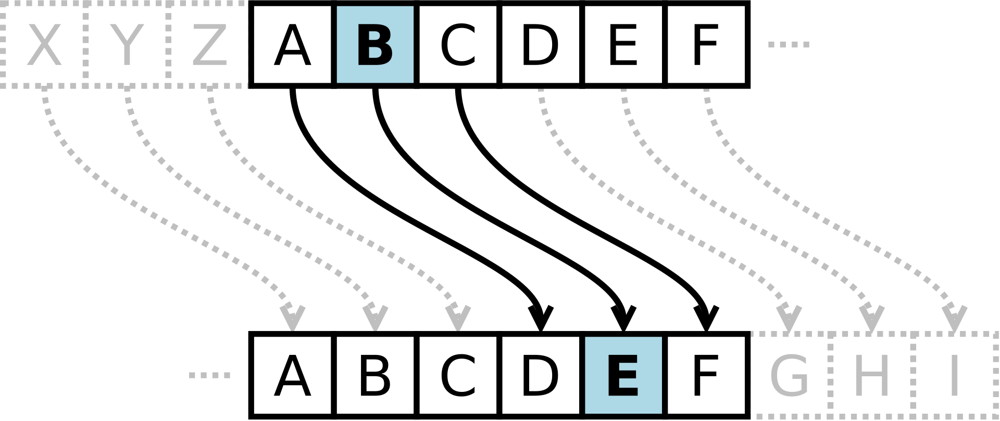

Em criptografia, a Cifra de César, também conhecida como cifra de troca, código de César ou troca de César, é uma das mais simples e conhecidas técnicas de criptografia. É um tipo de cifra de substituição na qual cada letra do texto é substituída por outra, que se apresenta no alfabeto abaixo dela um número fixo de vezes. Por exemplo, com uma troca de três posições, A seria substituído por D, B se tornaria E, e assim por diante. O nome do método é em homenagem a Júlio César, que o usou para se comunicar com os seus generais.
A transformação pode ser representada alinhando-se dois alfabetos; o alfabeto cifrado é o alfabeto normal rotacionado à direita ou esquerda por um número de posições. Por exemplo, aqui está uma cifra de César usando uma rotação à esquerda de três posições (o parâmetro de troca, três neste caso, é usado como chave).
Normal: ABCDEFGHIJKLMNOPQRSTUVWXYZ
Cifrado: DEFGHIJKLMNOPQRSTUVWXYZABC
Você seria capaz de traduzir o texto abaixo?
VH LQVFUBHD QO YHVWLEXODU IDWHF
Quer aprender mais sobre criptografia?